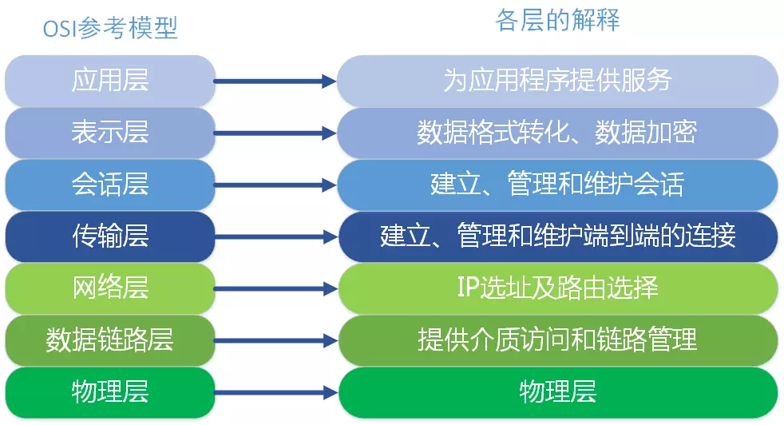

# net 模块
# 前言
Node 提供了net、dgram、http、https这 4 个模块分别处理TCP、UDP、HTTP、HTTPS，适用于服务器端和客户端。
# 内容
# 一、网络模型
七层网络分别是：应用层、表示层、会话层、传输层、网络层、数据链路层、物理层
 
# 二、输入 url 到页面加载都发生了什么事情？
# 2.1 3 次握手
- 客户端-发送带有 SYN 标志的数据包-一次握手-服务端
- 服务端-发送带有 SYN/ACK 标志的数据包-二次握手-客户端
- 客户端-发送带有 ACK 标志的数据包-三次握手-服务端
# 2.2 4 次挥手
- 客户端-发送一个 FIN，用来关闭客户端到服务器的数据传送
- 服务器-收到这个 FIN，它发回一个 ACK，确认序号为收到的序号加 1.和 SYN 一样，一个 FIN 将占用一个序号
- 服务器-关闭与客户端的连接，发送一个 FIN 给客户端
- 客户端-发回 ACK 报文确认，并将确认序号设置为收到序号加 1
输入地址
浏览器查找域名的 IP 地址
这一步包括 DNS 具体的查找过程，包括：浏览器缓存->系统缓存->路由器缓存...
浏览器向 web 服务器发送一个 HTTP 请求
服务器的永久重定向响应（从 http://example.com 到 http://www.example.com）
浏览器跟踪重定向地址
服务器处理请求
服务器返回一个 HTTP 响应
浏览器显示 HTML
浏览器发送请求获取嵌入在 HTML 中的资源（如图片、音频、视频、CSS、JS等等）
浏览器发送异步请求
2
3
4
5
6
7
8
9
10
11
参考资料：从 URL 输入到页面展现到底发生什么？
# 三、构建 TCP 服务
var net = require('net');
var server = net.createServer(function(socket){
// 新的连接
socket.on('data',function(data){
socket.write('你好');
});
socket.on('end',function(){
console.log('连接断开');
});
socket.write('欢迎光临《深入浅出Node.js》示例：\n');
});
server.listen(8124,function(){
console.log('server bound';)
})
2
3
4
5
6
7
8
9
10
11
12
13
14
15
16
17
# 3.1 TCP 服务的事件
- 服务器事件
- 连接事件
服务器事件
通过 net.createServer()创建的服务器而言，它是一个 EventEmitter 实例。
- listening:在调用 server.listen()绑定端口或者 Domain Socket 后触发，简洁写法为 server.listen(port,listeningListener)，通过 listent()方法的第二个参数传入。
- connection：每个客户端套接字连接到服务器端时触发。
- close：当服务器关闭时触发。
- error：当服务器发生异常时，将会触发该事件。比如侦听一个使用中的端口，将会触发一个异常，如果不侦听 error 事件，服务器将会抛出异常。
连接事件
服务器可以同时与多个客户端保持连接，对于每个连接而言是典型的可写可读 Stream 对象。
- data:当一端调用 write()发送数据时，另一端会触发 data 事件，事件传递的数据即是 write()发送的数据
- end:当连接中的任意一端发送了 FIN 数据时，将会触发该事件。
- connet：该事件用于客户端，当套接字与服务器端连接成功时会被触发。
- drain：当做任意一端调用 write()发送数据时，当前这端会触发该事件。
- error：当异常发生时，触发该事件。
- close：当套接字完全关闭时，触发该事件。
- timeout：当一定时间后不再活跃时，该事件将会被触发，通知用户当前该连接已经被闲置了。
# 四、构建 UDP 服务
UDP 又称用户数据包协议，与 TCP 一样同属于网络传输层。UDP 与 TCP 最大的不同是 UDP 不是面向连接的。TCP 中连接一旦建立，所有的会话都基于连接完成，客户端如果要与另一个 TCP 服务通信，需要另创建一个套接字来完成连接。但在 UDP 中，一个套接字可以与多个 UDP 服务通信，它虽然提供面向事务的简单不可靠信息传输服务，在网络差的情况下存在午饭严重的问题，但是由于它无须连接，资源消耗低，处理快速且灵活，所以常常应用在那种偶尔丢一两个数据包也不会产生重大影响的场景，比如音频、视频等。UDP 目前应用很广泛，DNS 服务即是基于它实现的。
# 7.1 创建 UDP 服务器端
var dgram = require('dgram');
var server = dgram.createSocket('udp4');
server.on('message',function(msg,rinfo){
console.log('server got:'+ msg + 'from '+ rinfo.address + ':'+rinfo.port);
})
2
3
4
5
6
7
# 7.2 创建 UDP 客户端
var dgram = require('dgram');
var message = new Buffer('深入浅出Node.js');
var client = dgram.createSocket('udp4');
client.send(message,0,message.length,41234,'localhost',function(err,bytes){
client.close();
})
2
3
4
5
6
send()方法的参数如下：
socket.send(buf,offset,length,port,address,[callback])
这些参数分别为要发送的 Buffer、Buffer 的偏移、Buffer 的长度、目标端口、目标地址、发送完成后的回调。
# 7.3 UDP 套接字事件
- message：当 UDP 套接字侦听网卡端口后，接收到消息时触发该事件，触发携带的数据为消息 Buffer 对象和一个远程地址信息。
- listening：当 UDP 套接字开始侦听时触发该事件。
- close：调用 close()方法时触发该事件，并不再触发 message 事件。如需再次触发 message 事件，重新绑定即可。
- error：当异常发生时触发该事件，如果不侦听，异常将直接抛出，使进程退出。
# 五、构建 HTTP 服务
略，参考上一篇文章
# 六、构建 WebSocket 服务
- WebSocket 客户端基于事件的编程模型与 Node 中自定义事件相差无几。
- WebSocket 实现了客户端与服务器端之间的长连接，而 Node 事件驱动方式十分擅长与大量的客户端保持高并发连接。
WebSocket 与传统 HTTP 有如下好处
- 客户端与服务器只建立一个 TCP 连接，可以使用更少的连接。
- WebSocket 服务器端可以推送数据到客户端，这远比 HTTP 请求响应模式更灵活、更高效。
- 有更轻量级的协议头，减少数据传送量。
Node 模拟浏览器
var WebSocket = function(url){
// 伪代码，解析ws://127.0.0.1:12010/updates，用于请求
this.options = parseUrl(url);
this.connect();
}
WebSocket.prototype.onopen = function(){
// TODO
};
WebSocket.prototype.setSocket = function(socket){
this.socket = socket;
};
WebSocket.prototype.connect = function(){
var this = that;
var key = new Buffer(this.options.protocolVersion + '-' + Date.now()).toString('base64');
var shasum = crypto.crateHash('sha1');
var expected = shasum.update(key + '58EAFA5-E914-47DA-95CA-C5AB0DC85B11').digest('base64');
var options = {
port: this.options.port,
host: this.options.hostname,
headers:{
'Connection':'Upgrade',
'Upgrade':'websocket',
'Sec-WebSocket-Version':this.options.protocolVersion,
'Sec-WebSocket-Key':key
}
};
var req = http.request(options);
req.end();
req.on('upgrade',function(res,socket,upgradeHead){
// 连接成功
that.setSocket(socket);
// 触发open事件
that.onopen();
})
};
2
3
4
5
6
7
8
9
10
11
12
13
14
15
16
17
18
19
20
21
22
23
24
25
26
27
28
29
30
31
32
33
34
35
36
37
38
39
40
服务器端响应行为
var server = http.createServer(function(req,res){
res.writeHead(200,{'Content-Type':'text/plain'});
res.end('Hello World\n');
});
server.listen(12010);
// 在收到upgrade请求后，告之客户端鸡毛切换协议
server.on('upgrade',function(req,socket,upgradeHead){
var head = new Buffer(upgradeHead,length);
upgradeHead.copy(head);
var key = req.headers['sec-websocket-key'];
var shasum = crypto.createHash('sha1');
key = shasum.update(key+ '58EAFA5-E914-47DA-95CA-C5AB0DC85B11').digest('base64');
var headers =[
'HTTP/1.1 101 Switching Protocols',
'Upgrade: websocket',
'Connection: Upgrade',
'Sec-WebSocket-Accept: ' + key,
'Sec-WebSocket-Protocol: ' + protocol
];
// 让数据提立即发送
socket.setNoDelay(true);
socket.write(headers.concat('','').join('\r\n'));
// 建立服务器端WebSocket连接
var websocket = new WebSocket();
websocket.setSocket(socket);
})
2
3
4
5
6
7
8
9
10
11
12
13
14
15
16
17
18
19
20
21
22
23
24
25
26
27
# 参考资料
- net 模块
- 入门 Node.js Net 模块构建 TCP 网络服务
- 如何用 nodejs 编写 TCP 长连接应用
- 《深入浅出 nodejs》
# 联系作者
平凡世界，贵在坚持。

← koa 源码分析 process 进程 →